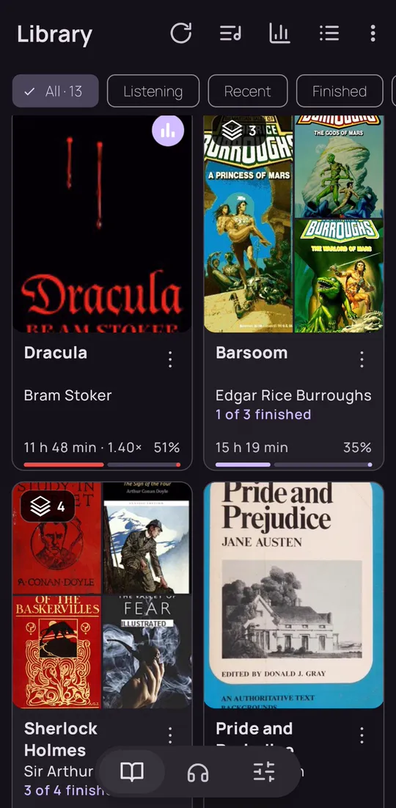
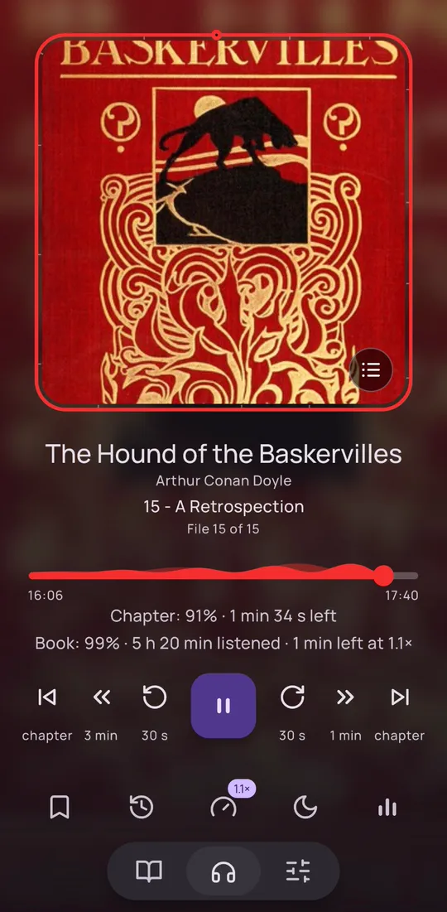
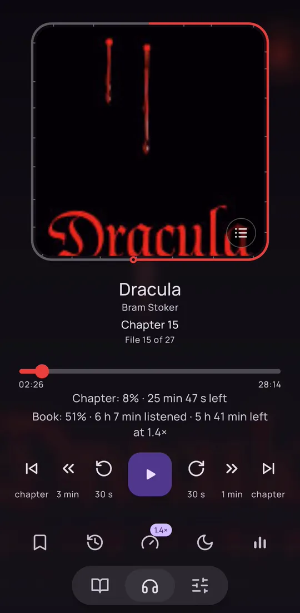
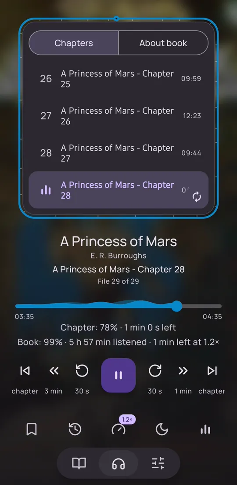
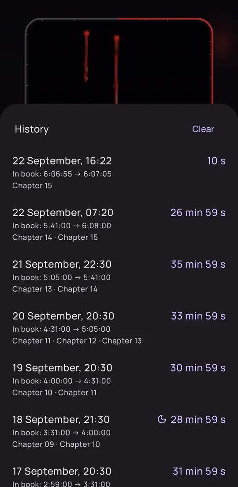
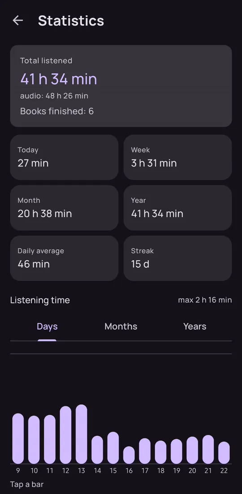
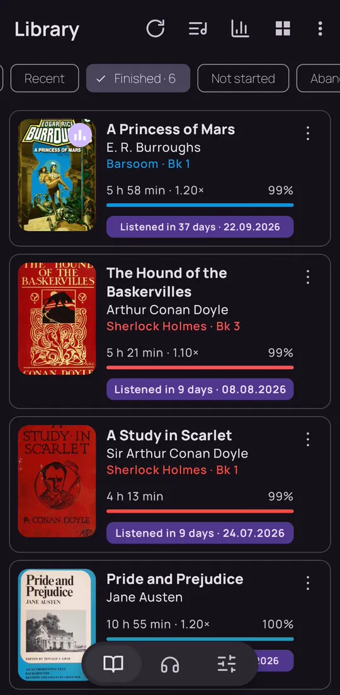

Аудіокниги з вашого телефона — без акаунтів і реклами Audiobooks from your phone — no accounts, no ads
Sonaris грає аудіокниги, які вже лежать у вас на телефоні. Пам'ятає, де ви зупинились, і допомагає заснути під книгу, не втративши місця. Sonaris plays the audiobooks already on your phone. It remembers where you stopped and lets you fall asleep to a book without losing your place.
- MP3 · M4A · M4B · Opus
- ОфлайнOffline
- Без акаунтівNo accounts
- Без рекламиNo ads
Кожна підпапка — книгаEach subfolder is a book
Вкажіть папку з аудіокнигами — і бібліотека готова. Серії збираються самі й показують, скільки книг уже прослухано. Сіткою чи списком, з фільтрами «Слухаю», «Нещодавні», «Прослухані». Point Sonaris at your audiobook folder and the library is ready. Series group themselves and show how many books you’ve finished. Grid or list, with Listening, Recent and Finished filters.

Плеєр вдягає кольори книгиThe player wears the cover’s colours
Фон, прогрес і рамка беруть колір з обкладинки, тож кожна книга виглядає по-своєму. Рамка навколо обкладинки — це прогрес усієї книги. А швидкість кожна книга тримає свою. The background, progress bar and frame take their colour from the cover, so every book looks like itself. The frame around the cover is the progress of the whole book. And each book keeps its own speed.


Глави M4B — прямо з файлуM4B chapters, straight from the file
Торкніться обкладинки — вона перевернеться, а під нею список глав і опис книги. Поточна глава підсвічена, до будь-якої — один дотик. Tap the cover and it flips over to show the chapter list and the book’s description. The current chapter is highlighted; any other is one tap away.

Засинайте під книгу — місце не загубитьсяFall asleep to a book without losing your place
Таймер плавно стишує звук, а вранці відмотує туди, де ви заснули. Кожне прослуховування лишається в історії — з часом, главами й позначкою місяця, якщо спрацював таймер. The timer fades the sound out, and in the morning rewinds to where you dozed off. Every session stays in the history — with times, chapters and a moon when the timer stopped it.

Що довша пауза — то далі назадThe longer the pause, the further back
Повернулись до книги — і кілька секунд прокручуються назад, щоб згадати, на чому зупинились. Після короткої паузи ледь-ледь, наступного дня — помітніше. Пороги й секунди налаштовуються.Come back to a book and it steps back a few seconds so you can pick up the thread. Barely after a short pause, more the next day. Thresholds and seconds are adjustable.
Скільки слухаєте — і за скільки дочиталиHow much you listen — and how long each book took
Час за день, тиждень, місяць і рік, серія днів поспіль і графік. А в прослуханих книгах видно, за скільки днів ви кожну подужали. Time per day, week, month and year, your streak and a chart. And finished books show how many days each one took.

